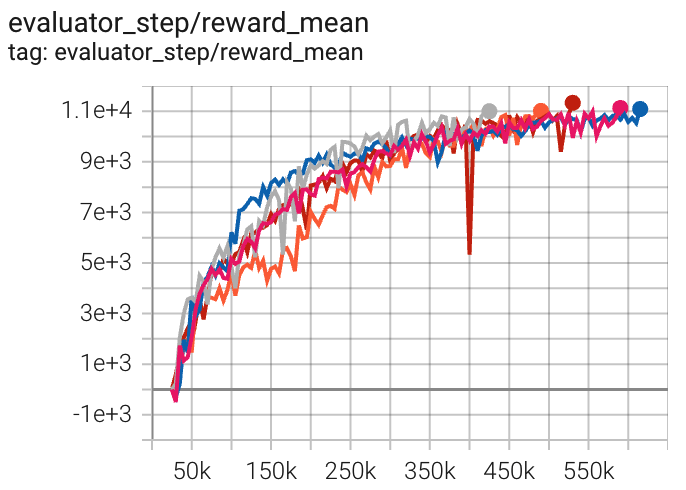
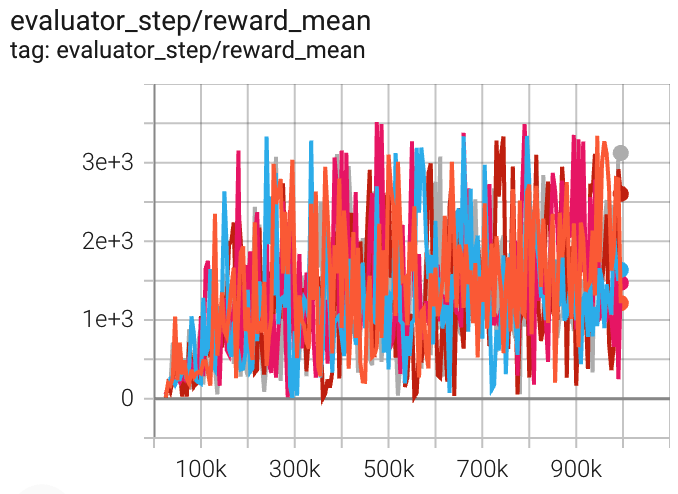
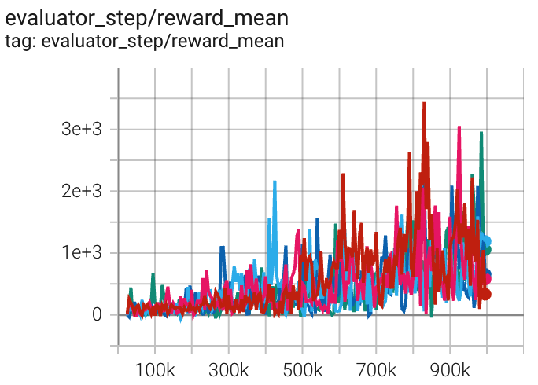

DDPG¶
Overview¶
Deep Deterministic Policy Gradient (DDPG), proposed in the 2015 paper Continuous control with deep reinforcement learning, is an algorithm which learns a Q-function and a policy simultaneously. DDPG is an actor-critic, model-free algorithm based on the deterministic policy gradient(DPG) that can operate over high-dimensional, continuous action spaces. DPG Deterministic policy gradient algorithms algorithm is similar to NFQCA.
Quick Facts¶
DDPG is only used for environments with continuous action spaces (e.g. MuJoCo).
DDPG is an off-policy algorithm.
DDPG is a model-free and actor-critic RL algorithm, which optimizes the actor network and the critic network, respectively.
Usually, DDPG use Ornstein-Uhlenbeck process or Gaussian process (default in our implementation) for exploration.
Key Equations or Key Graphs¶
The DDPG algorithm maintains a parameterized actor function \(\mu\left(s \mid \theta^{\mu}\right)\) which specifies the current policy by deterministically mapping states to a specific action. The critic \(Q(s, a)\) is learned using the Bellman equation as in Q-learning. The actor is updated by following the applying the chain rule to the expected return from the start distribution \(J\) with respect to the actor parameters:
DDPG uses a replay buffer to guarantee that the samples are independently and identically distributed.
To keep neural networks stable in many environments, DDPG uses “soft” target updates to update target networks rather than directly copying the weights. Specifically, DDPG creates a copy of the actor and critic networks, \(Q'(s, a|\theta^{Q'})\) and \(\mu' \left(s \mid \theta^{\mu'}\right)\) respectively, that are used for calculating the target values. The weights of these target networks are then updated by having them slowly track the learned networks:
where \(\tau<<1\). This means that the target values are constrained to change slowly, greatly improving the stability of learning.
A major challenge of learning in continuous action spaces is exploration. However, it is an advantage for off-policies algorithms such as DDPG that the problem of exploration could be treated independently from the learning algorithm. Specifically, we constructed an exploration policy by adding noise sampled from a noise process N to actor policy:
Pseudocode¶

Extensions¶
- DDPG can be combined with:
Target Network
Continuous control with deep reinforcement learning proposes soft target updates used to keep the network training stable. Since we implement soft update Target Network for actor-critic through
TargetNetworkWrapperinmodel_wrapand configuringlearn.target_theta.Replay Buffers
DDPG/TD3 random-collect-size is set to 25000 by default, while it is 10000 for SAC. We only simply follow SpinningUp default setting and use random policy to collect initialization data. We configure
random_collect_sizefor data collection.Gaussian noise during collecting transition.
For the exploration noise process DDPG uses temporally correlated noise in order to explore well in physical environments that have momentum. Specifically, DDPG uses Ornstein-Uhlenbeck process with \(\theta = 0.15\) and \(\sigma = 0.2\). The Ornstein-Uhlenbeck process models the velocity of a Brownian particle with friction, which results in temporally correlated values centered around 0. However, we use Gaussian noise instead of Ornstein-Uhlenbeck noise due to too many hyper-parameters of Ornstein-Uhlenbeck noise. We configure
collect.noise_sigmato control the exploration.
Implementations¶
The default config is defined as follows:
Model¶
Here we provide examples of QAC model as default model for DDPG.
Train actor-critic model¶
First, we initialize actor and critic optimizer in _init_learn, respectively.
Setting up two separate optimizers can guarantee that we only update actor network parameters and not critic network when we compute actor loss, vice versa.
# actor and critic optimizer self._optimizer_actor = Adam( self._model.actor.parameters(), lr=self._cfg.learn.learning_rate_actor, weight_decay=self._cfg.learn.weight_decay ) self._optimizer_critic = Adam( self._model.critic.parameters(), lr=self._cfg.learn.learning_rate_critic, weight_decay=self._cfg.learn.weight_decay )
- In
_forward_learnwe update actor-critic policy through computing critic loss, updating critic network, computing actor loss, and updating actor network. critic loss computationcurrent and target value computation
# current q value q_value = self._learn_model.forward(data, mode='compute_critic')['q_value'] q_value_dict = {} if self._twin_critic: q_value_dict['q_value'] = q_value[0].mean() q_value_dict['q_value_twin'] = q_value[1].mean() else: q_value_dict['q_value'] = q_value.mean() # target q value. SARSA: first predict next action, then calculate next q value with torch.no_grad(): next_action = self._target_model.forward(next_obs, mode='compute_actor')['action'] next_data = {'obs': next_obs, 'action': next_action} target_q_value = self._target_model.forward(next_data, mode='compute_critic')['q_value']
loss computation
if self._twin_critic: # TD3: two critic networks target_q_value = torch.min(target_q_value[0], target_q_value[1]) # find min one as target q value # network1 td_data = v_1step_td_data(q_value[0], target_q_value, reward, data['done'], data['weight']) critic_loss, td_error_per_sample1 = v_1step_td_error(td_data, self._gamma) loss_dict['critic_loss'] = critic_loss # network2(twin network) td_data_twin = v_1step_td_data(q_value[1], target_q_value, reward, data['done'], data['weight']) critic_twin_loss, td_error_per_sample2 = v_1step_td_error(td_data_twin, self._gamma) loss_dict['critic_twin_loss'] = critic_twin_loss td_error_per_sample = (td_error_per_sample1 + td_error_per_sample2) / 2 else: # DDPG: single critic network td_data = v_1step_td_data(q_value, target_q_value, reward, data['done'], data['weight']) critic_loss, td_error_per_sample = v_1step_td_error(td_data, self._gamma) loss_dict['critic_loss'] = critic_loss
critic network update
self._optimizer_critic.zero_grad() for k in loss_dict: if 'critic' in k: loss_dict[k].backward() self._optimizer_critic.step()
actor loss
actor_data = self._learn_model.forward(data['obs'], mode='compute_actor') actor_data['obs'] = data['obs'] if self._twin_critic: actor_loss = -self._learn_model.forward(actor_data, mode='compute_critic')['q_value'][0].mean() else: actor_loss = -self._learn_model.forward(actor_data, mode='compute_critic')['q_value'].mean() loss_dict['actor_loss'] = actor_loss
actor network update
# actor update self._optimizer_actor.zero_grad() actor_loss.backward() self._optimizer_actor.step()
Target Network¶
We implement Target Network trough target model initialization in _init_learn.
We configure learn.target_theta to control the interpolation factor in averaging.
# main and target models
self._target_model = copy.deepcopy(self._model)
self._target_model = model_wrap(
self._target_model,
wrapper_name='target',
update_type='momentum',
update_kwargs={'theta': self._cfg.learn.target_theta}
)
Benchmark¶
environment |
best mean reward |
evaluation results |
config link |
comparison |
|---|---|---|---|---|
HalfCheetah (HalfCheetah-v3) |
11334 |
 | Tianshou(11719) Spinning-up(11000) |
|
Hopper (Hopper-v2) |
3516 |
 | Tianshou(2197) Spinning-up(1800) |
|
Walker2d (Walker2d-v2) |
3443 |
 | Tianshou(1401) Spinning-up(1950) |
P.S.：
The above results are obtained by running the same configuration on five different random seeds (0, 1, 2, 3, 4)
References¶
Timothy P. Lillicrap, Jonathan J. Hunt, Alexander Pritzel, Nicolas Heess, Tom Erez, Yuval Tassa, David Silver, Daan Wierstra: “Continuous control with deep reinforcement learning”, 2015; [http://arxiv.org/abs/1509.02971 arXiv:1509.02971].